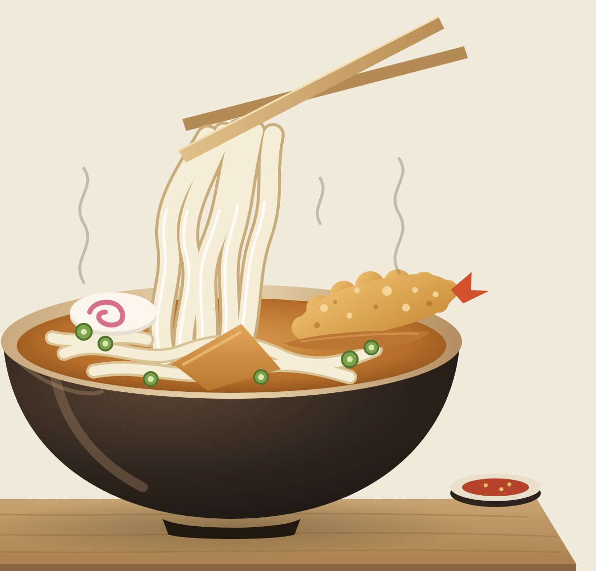

메뉴판 디자인 · SD-MN63
이 디자인으로 상담하기
면담 우동 아침마다 반죽을 밟아 뽑는 굵은 수타 우동과 매일 우리는 가쓰오 다시 국물을 내는 우동집
A4 세로 · 1쪽 · 한국어 · 원화생지 미색 · 다시마 먹녹색 · 다시 앰버젓가락으로 들어 올린 굵은 면 일러스트
![면담 우동 메뉴판 전체. 밀가루 결이 느껴지는 미색 종이 바탕 왼쪽 위에 아침마다 반죽을 밟아 뽑는 굵은 우동이라는 작은 글씨와 굵은 명조체 큰 글씨 면담 우동, 가쓰오 다시와 수타 굵은 면이라는 부제, 반죽을 두 번 밟고 하룻밤 재우며 국물은 매일 오전 9시에 새로 우린다는 소개가 있고, 그 아래 반죽 숙성 18시간, 면 굵기 6mm, 하루 국물 1솥 세 칸이 있습니다. 오른쪽 위에는 나무 쟁반에 놓인 흑갈색 사발에 호박색 국물과 어묵, 유부, 쪽파, 새우튀김이 담겨 있고, 나무 젓가락이 굵은 우동 면 다섯 가닥을 들어 올리고 있습니다. 아래 왼쪽에는 따뜻한 국물 우동 다섯 가지와 차가운 우동 두 가지가 설명과 가격으로 나뉘어 있고, 첫 줄 가케 우동 8,500원은 연한 갈색 바탕과 처음 오셨다면 표시로 강조되어 있습니다. 오른쪽에는 튀김 한 조각과 밥과 음료 목록, 짙은 먹녹색 상자 속 면은 주문 받고 삶는다는 안내가 있고, 맨 아래 영업시간, 포장 안내, 주홍색 면담 도장이 있습니다.](page1.png)

들어 올린 면 한 젓가락면 굵기가 한눈에 보이도록 젓가락으로 들어 올린 순간을 그렸습니다
바꿀 수 있는 것
- 메뉴 구성, 가격, 곱빼기 금액
- 사발 그림을 국물 색과 고명에 맞춰 교체
- 벽 메뉴판, 키오스크 화면, QR 웹 메뉴판